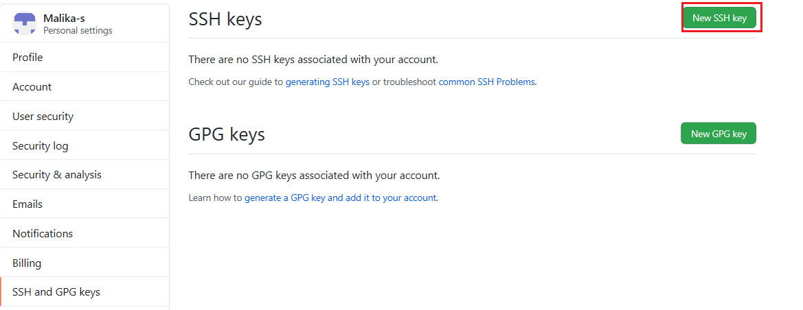

Objective for Exercise
An SSH key is an access credential in the SSH protocol. Its function is similar to that of user names and passwords, but the keys are primarily used for automated processes.
ssh-keygen -t rsa -b 4096 -C "<your email address>"
This will generate a new SSH key.
Next, you will be prompted to enter a directory to save the key. I simply press Enter to accept the default location, which is a .ssh folder in the home directory. In ther words, you will be able to locate the key in ~/.ssh/id_rsa
You will then be prompted to choose a passphrase. I prefer not to have a passphrase; so just press Enter and Enter again to confirm the empty passphrase.
Now, if you navigate to the .ssh directory, i.e., if you run the following in the Git Bash terminal,
cd ~/.ssh
and then,
ls
To the list the contents of the .ssh directory, you should find “id_rsa” and “id_rsa.pub” in the list of contents, where “id_rsa” is the private version of your key and “id_rsa.pub” is the public version of your key.
eval "$(ssh-agent -s)"
ssh-add ~/.ssh/id_rsa
cat ~/.ssh/id_rsa.pub | clip
Under Personal settings, select “SSH and GPG keys”, as shown below:
click the button to add a new SSH key

Provide the title. Then select the Key field, and press Ctrl-v to paste the key from the clipboard buffer. The pasted key should have your email address at the end, as shown below:
and click 'Add SSH Key'.
Now, the SSH key is added to your account.
Lavanya
| Date | Version | Changed by | Change Description |
|---|---|---|---|
| 2020-08-25 | 2.0 | Lavanya | Migrated Lab to Markdown and added to course repo in GitLab |